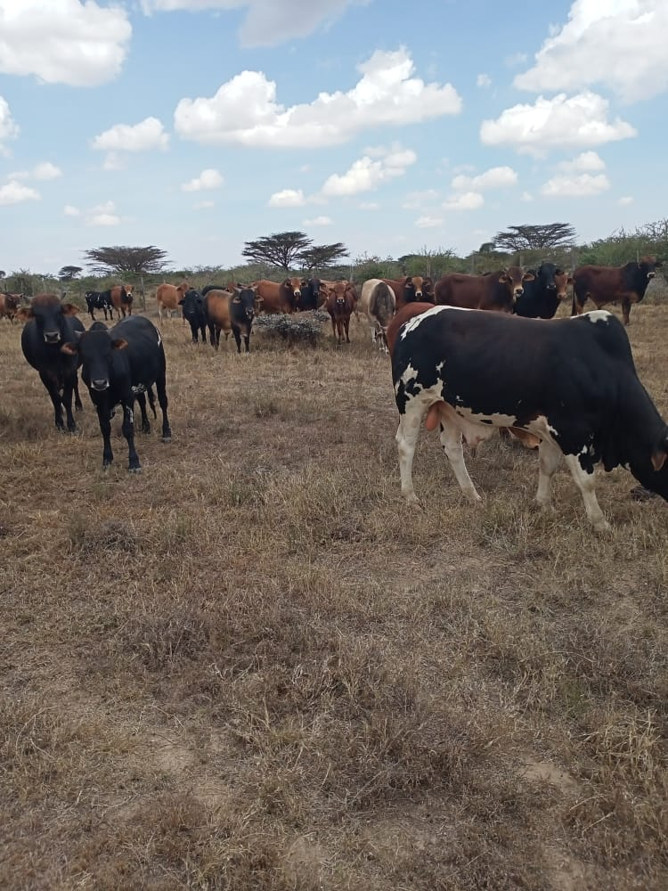

<!DOCTYPE html>
<html lang="en">
<head>
    <meta charset="UTF-8">
    <meta http-equiv="X-UA-Compatible" content="IE=edge">
    <meta name="viewport" content="width=device-width, initial-scale=1.0">
    <title><b>SANKAIRE FARM TRAINING INSTITUTE AND INPUTS</b></title>
    <link rel="stylesheet" type="text/css" href="style.css">
</head>
<body style="background-color: rgb(172, 171, 235); font-size: 16px;"></body>
    <style type="text/css">
        aside {
             width: 63%;
             padding-left: 15px;
             margin-left: 15px;
             float: right;
             font-style: italic;
             background-color: rgb(233, 10, 10);
        }
        .column{
            float: left;
            width: 33%;
            padding: 10px;
            height: 300px;
        }
        h2{
            text-decoration: dotted;
            font-size: 16px; 
        } 
        .tractors,.livestock,.farm{
            width: 400px;;
            height:250px;
        }
        .tractors{
            float:right;
            width: 400px;
            height: 300px;
           
        }
        .farm.livestock{
            float:left;
            
        }
        .product_farm{
            padding-top:100px;
        }
        .product_cows{
            padding-top:200px;
        }
    </style>
      
    -->
    <h1 style="text-align: center;text-decoration-color: rgb(16, 17, 17);">Sankaire Station</h1>
    <h1 style="text-align: center;text-decoration-color: black;" >About farming</h1>
    <nav>
        <ul>
          
            <li> <a href="home.html">Home</a></li>
            <li><a href="about.html">About</a></li>
            <li><a href="contact.html"> Contact</a></li>
           
        </ul>
    </nav>
    <h2>Who are we</h2>
    <div class="product_livestock">
      
      <aside><
 <p>Training institute and inputs is a lifetime project of Sankaire,who started it as an examplary way of living in harmony through generation of income and also making sure of living a healthy life through eaating healthly.Today, i'm happy to cherish the full functioning farm and the intense inputs that i have worked on for a period of time,aiming to providethe customers with fresh products and teaching them ways to be perfect in the sector of farming and also in using the inputs.you can also learn more about us on the <a href="https://sankairefarm.ac.ke">sankairefarm</a></p>
</aside>
</div>
    <h2>Our products</h2>
    <div class="product_tractors">
     
<aside>
    <p> Over the decade we established and improve the technology of growing and making organic products while enhancing the maximazation of use of the farm inputs.Now,we can offer more than just garden grown products.We also do bee keeping hence collecting honey,making cheese.In addition to the fresh fruits and vegetable grown in our garden,it helps us in making jam,syrups and breed.Check updates for the seasonal products .</p>
    <p> </p>
    <p> </p>
    <p> </p>
    <p> </p>
    <p> </p>
</aside>    
     </div>
     <div class="product_farm">
     <h2>Why farming</h2>
     
     <aside>
     <p>For decades, agriculture has been associated with the production of essential food crops.At present,agriculture above and beyond farming includes forestry dairy ,fruit cultivation,poultry,beekeeping,mushroom,arbitrary,etc <class="br">Today, processing ,marketing and distributionof crops and livestock products, etc.Are all acknowledge aas part of current agriculture .Thus, ariculture could be reffered to as the production,procesdsing and distribution of agricultural products.</etc></p>
    </aside> 
    </div>
</body>
     </div>
     
</html>
